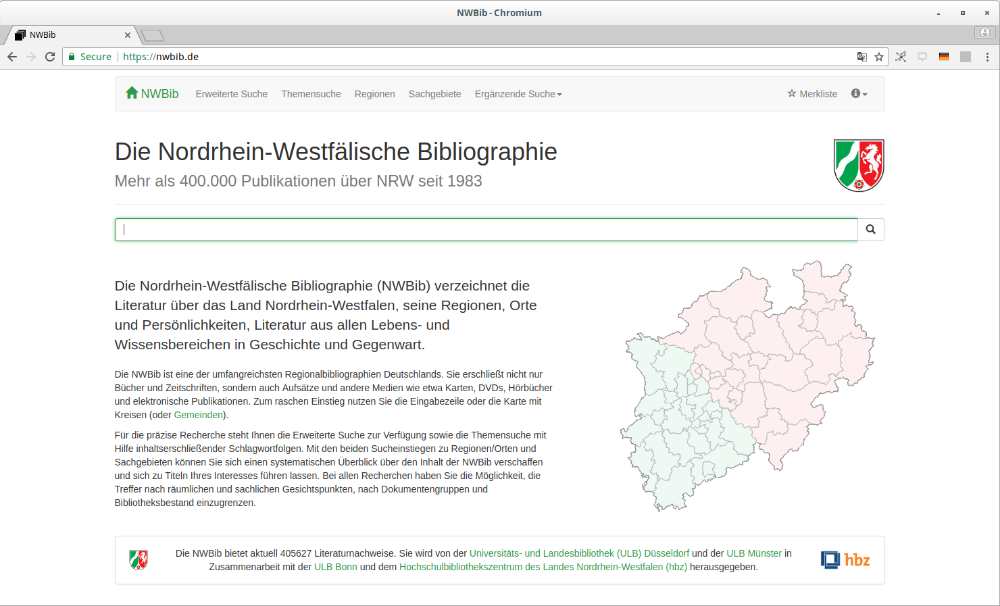

lobid –
LOD-APIs und Rechercheoberflächen für zentrale bibliothekarische Daten
Adrian Pohl /
@acka47 &
Pascal Christoph /
@dr0ide
Linked
Open Data, Hochschulbibliothekszentrum NRW (hbz)

Zürich, 2019-03-29
Diese Präsentation:
http://slides.lobid.org/htw-chur-2019/

Agenda
- Kennenlernen
- LOD @hbz
- Entwicklungsprozess
- lobid
- lobid: Generelles
- lobid: Historisches
- lobid & Openness
- Pause
- LOUD und JSON-LD
- Ein Beispiel: lobid-gnd
- lobid-Nutzung
- Wikidata als Normdatei
- Abschlussdiskussion
1. Kennenlernen
Adrian
1999-2007 Magister Kommunikationswissenschaften & Philosophie, RWTH Aachen
2009-2011 MALIS, FH Köln
seit 2008 hbz, Köln
Produkte/Projekte: vor allem lobid, aber auch Metadaten für Open Educational Resources (OER) & oerworldmap.org
Aufgaben: Datenmodellierung & Standards, Functional Review, Koordination & Kommunikation
Co-Chair der internationalen SWIB-Konferenz (Semantic Web in Bibliotheken)
Pascal
t
b
d
Und ihr?
Schon von lobid gehört?
Wer hat schon ein Wikimedia-Projekt genutzt? Editiert?
Wer hat Wikidata geSPARQLt?
Wer hat schon von Creative Commons gehört? ...eine CC-Lizenz vergeben?
2. LOD @hbz
Linked Open Data im hbz
"Im LOD-Programmbereich unterstützen wir die Etablierung und Pflege einer zukunftssicheren bibliothekarischen Dateninfrastruktur im regionalen, überregionalen und internationalen Raum. Die Kernpunkte der LOD-Arbeit sind: 1.) Nutzung, Pflege und Unterstützung offener Infrastruktur, 2.) Forschung und Entwicklung sowie 3.) Wissens- und Technologietransfer."

Wer macht was
Bibliothekar*innen: Metadaten-Formate, -Vokabulare, -Mappings, Functional Review (Adrian Pohl)
Entwickler*innen: Datentransformation, Administration, Indexierung, Oberflächen (Pascal Christoph, Fabian Steeg)
Rechner: 1 Web-Proxy, 1 Web-Server, 2*2 Index-Cluster, 5 Batch etc.
Openness
Gemeinsam ist allen LOD-Aktivitäten ein Bekenntnis zu einer offenen und transparenten Arbeitsweise
Sämtliche Entwicklungen auf Basis offener Webstandards
Softwarecode und Daten sind offen lizenziert (EPL & CC0)
Sämtliche Publikationen, Lehr- und Lernmaterialien im Web mit offener Lizenz veröffentlicht (siehe etwa slides.lobid.org)
Warum open?
Alternative zu einem in der Bibliothekswelt weit verbreiteten Vendor Lock-in
Voraussetzung für Tranzparenz und Nachnutzung
Arbeit mit und an offenen Ansätzen motiviert
Freie Software als Bewerbungsargument für Entwickler*innen
3. Entwicklungs-prozess
Open-Source-Entwicklung auf GitHub
GitHub
Eine Art Social Network für Softwareentwicklung
Wir entwickeln Open-Source-Software auf GitHub
Nicht nur Ergebnisse veröffentlichen, sondern Prozess dort
d.h. Planen, Issue-Tracking, Code, Testen, Diskussion
GitHub Issues
GitHub hat einen integrierten Issue-Tracker
Primäres Organisationsmittel: beliebige Labels mit Farben
Integriert: Links zu Code, Commits, Usern, Markdown
Mehrere Repos
GitHub-Issues immer mit 1 GitHub-Repo assoziiert
Für einheitlichen Blick auf alle vom Team bearbeiteten Issues: Kanban-Board zur Visualisierung des Workflows
Waffle: Kanban-Board mit GitHub-Integration:
jedes Issue entspricht 1 Karte, Spalten entsprechen Labels
Prozess
Generell: Links → Rechts
| Backlog | Ready | Working | Review | Deploy | Done |
|---|---|---|---|---|---|
| Neue Issues ohne Label | Bereit, d.h. Anforderungen und Abhängigkeiten sind klar | In Bearbeitung | In Überprüfung | Bereit für Produktion | In Produktion |
Priorisierte Karten nach oben in der Spalte; Bugs generell priorisiert
Tägliche Treffen
Priorisierung unter anderem in täglichen kurzen Besprechungen
(vor dem Mittagessen, 12 Uhr, 5-15 Minuten)
Jeder: 1) Was zuletzt 2) Was aktuell, ev. Probleme 3) Als nächstes
Wenn alle im hbz sind: im Stehen; sonst online (z.Zt.: Wire)
Planungstreffen
Nach Bedarf, alle paar Monate, längeres Planungstreffen (1-2 Std.)
Gemeinsam am Board Tickets durchgehen und priorisieren
4. lobid
Linking open (bibliographic) data
Das Zentrum der im LOD-Programmbereich bereitgestellten Dienste
Dateninfrastruktur für Bibliotheken, Archive, Museen
Das hbz entwickelt seit 2009 Software im Bereich Linked Open Data (LOD)
Leitlinien
1. Publikation offen lizenzierter Daten zur freien Nutzung
2. Nutzung domänenübergreifender Web-Standards
3. Bereitstellung von Web-APIs plus Rechercheoberflächen
(Datenpflege erfolgt nach wie vor in Legacy-Systemen)
Warum LOD?
Überführung traditioneller bibl. Praktiken in das Web
Bibliothekarische Institutionen als vertrauenswürdige, stabile Säulen des Semantic Web
Sichtbarkeit und Auffindbarkeit im Web erreichen
Nachnutzbarkeit ermöglichen
Synergieeffekte durch Verlinkung mit anderen Daten
Verbesserung der Recherchemöglichkeiten
Quelle: Pohl, Adrian / Ostrowski, Felix (2010): 'Linked Data' - und warum wir uns im hbz-Verbund damit beschäftigen." B.I.T. Online 13(3): S. 259-268. Preprint: http://hdl.handle.net/10760/14836Beispiel: OPAC vs. lobid
Aufgabe: Verlinke eine Liste von Online-Resourcen zum "Hambacher Forst"
OPAC: http://okeanos-www.hbz-nrw.de/F
lobid-resources: https://lobid.org/resources
Historisches
2010-2013: R&D / Alpha-Betrieb
2010-2012: jahrelanger Prozess zur offenen Lizenzierung der Verbunddaten, siehe auch Kreutzer (2011)
2013-2017/18: lobid-API v1.x
2017/2018: gradueller Umstieg auf lobid-API v2 (LOUD)
Publikation: erst RDF-Dateien, dann SPARQL, jetzt LOD-API
Transformation: von Perl-Skript zu hbz-Tool zu Metafacture
Cool URIs for the Semantic Web: Von 303 Redirect zu Hash URIs
lobid-Dienste
Mittlerweile sind alle Dienste in der zweiten Version
lobid-resources: Daten des hbz-Verbundkatalogs
lobid-organisations: Daten des deutschsprachigen Sigelverzeichnisses und DBS-Stammdaten
lobid-gnd: Gemeinsame Normdatei
Datenquellen und -formate

lobid-organisations

Dokumentation der lobid-organisations-API: https://lobid.org/organisations/api
lobid-gnd

Dokumentation der lobid-gnd-API: https://lobid.org/gnd/api
lobid-resources

Dokumentation der lobid-resources-API: https://lobid.org/resources/api
5. Pause
6. LOUD und JSON-LD
Linked Open Usable Data (LOUD)
Grundidee: damit Daten nützlich sind, muss man die Zielgruppe kennen & sich auf sie ausrichten
Hauptzielgruppe von LOD: Entwickler*innen (1st & 2nd party) oder Nutzer*innen (3rd party) von Software für Datenzugriff und -manipulation
LOUD: Orientierung auf Bedürfnisse und Konventionen der Software-Entwicklung

Source: Rob Sanderson, "Shout it Out: LOUD", CC-BY (video)

Source: Rob Sanderson, "Shout it Out: LOUD", CC-BY (video)
Part Ia.
Usable data & APIs
APIs: why, how
Usable data [& APIs]
Data is used with software
Build new software with the data
Use existing software with the data
Libraries are Software
Our collections and services are delivered primarily via software. [...] The choices we make in the development, selection, and implementation of this software [...] define the limits of our content and services. We can only be as good as our software.
— Cody Hanson, Libraries are Software
[Usable data &] APIs
Software
requires APIs
APIs make software development manageable
(for 1st and 2nd party software)
APIs enable usage and integration of 3rd party software
e.g. lobid sources, formats, applications
APIs decouple applications from specific data sources, formats, and systems. They enable modular, sustainable applications.
API: why?
★ Right abstraction for the audience
Data is used with software
Software requires APIs
API: why?
Usable data
is data with APIs
API: how?
3. Don't break the web
API: how?
JSON over HTTP
standard web API format since years
e.g. https://api.github.com/
GET https://api.github.com
{
"current_user_url": "https://api.github.com/user",
"authorizations_url": "https://api.github.com/authorizations",
"emails_url": "https://api.github.com/user/emails",
"emojis_url": "https://api.github.com/emojis",
"events_url": "https://api.github.com/events",
"feeds_url": "https://api.github.com/feeds",
"followers_url": "https://api.github.com/user/followers",
"gists_url": "https://api.github.com/gists{/gist_id}",
"hub_url": "https://api.github.com/hub",
...
}
7. Ein Beispiel: lobid-gnd
a. Die Oberfläche
Auto Suggest

Ergebnisliste

Einzeltreffer

Beziehungsgraph

b. Die Daten

JSON(-LD)

Datenherkunft & -generierung
Tägl. Bezug der GND-RDF-Daten von der DNB via OAI-PMH
Konversion nach JSON-LD mittels @context, Framing etc.
Homogenisierung von Typen und Label-Properties
Labels für verlinkte Ressourcen ergänzen
Anreicherung mit EntityFacts-Links und -Bildern
Et voilà: Linked Open Usable Data (LOUD)
c. Web-API

Abfrage-Möglichkeiten
JSON-LD-Daten in Elasticsearch-Index
Elasticsearch bzw. Lucene Suchsyntax
OpenRefine Reconciliation Endpoint
Für Einzeltreffer andere RDF-Serialisierungen per Content Negotiation
Beispiel-Abfragen
Personen, die während der NS-Zeit in Köln geboren wurden

Einträge, die einen DDB-Link aber keinen Wikidata-Link haben

Alle Entitäten, zu denen ein Architekt angegeben wurde

"Kleinräumige Geografika" innerhalb von Berlin

Kibana-Visualisierungen
http://kibana.lobid.org/app/kibana#/visualize8. lobid-Nutzung
Verbundbibliotheken auf hbz-Website

Basiert auf lobid-organisations
Edoweb und Fachrepositorium Lebenswisschenschaften (FRL)
https://www.edoweb-rlp.de/ & https://repository.publisso.de/
Betrieben von Jan Schnasse in der Gruppe Publikationssysteme
Nutzt lobid-resources Daten
Im FRL-Erfassungsformular Nutzung des GND-ID-Lookups von lobid-gnd
NWBib
NWBib
Basiert vollständig auf der lobid-API
Nutzt das NWBib-Subset von lobid-resources
Informationen zu besitzenden Bibliotheken von lobid-organisations
Themenvorschläge auf Basis von lobid-gnd
NWBib-Suchergebnisliste

Anfrage gegen das NWBib-Subset in lobid-resources

Informationen zu besitzenden Bibliotheken (Name, URL, Standort) werden aus lobid-organisations geladen

Suche in den Verweisungsformen der GND und Anzeige von bis zu drei Vorschlägen, die am meisten Treffer in der NWBib bringen
GND-Lookup im CMIF Creator 2
Der CMIF Creator ermöglicht das bequeme, formularbasierte Erstellen von digitalen Briefverzeichnissen gedruckter Editionen im "Corresponence Metadata Interchange Format" (CMIF) – auch ohne technische Kenntnisse. (...) [Es ist] nun möglich, direkt im Formular die zu einer Person oder Körperschaft passende ID aus der Gemeinsamen Normdatei auszuwählen. Hierbei greift der CMIF Creator 2 auf die von lobid.org bereitgestellte GND-API zurück.
Quelle: Stefan Dumont, "correspSearch: Neue Tools, neue Daten – und eine Auszeichnung"
Virtuelle Deutsche Landesbibliographie

Seit April 2018 ist nwbib.de in die VDL integriert.
Reconciliation mit OpenRefine
Matchen auf GND-Ressourcen in OpenRefine
Übernahme von Daten aus spezifischen Feldern mittels Data Extension API
lobid-gnd ist der zweite Dienst nach Wikidata, der die Data Extension API unterstützt
Große Resonanz auf das Angebot, insbesondere aus den Digital Humanities


Kalliope

Anzeige von externen Links (z.B. Wikipedia) aus lobid-gnd auf Personenseiten
Biographisches Portal NRW

Literaturlisten auf Basis von und Links zu lobid-resources
Bibliothekskatalog des Juristischen Seminars der ULB Bonn

Bulk Download der Daten mit Bestand in DE-5-34
Discovery-Index der UB Dortmund

Daten zu den Beständen der UB & einiger umliegender Bibliotheken werden täglich von lobid geholt, transformiert und in den Index geladen
9. Wikidata als Normdatei
10. Abschlussdiskussion

Weiterführende Informationen
- lobid-Blog
- lobid auf Twitter
- Pohl, Adrian / Steeg, Fabian / Christoph, Pascal (2018): lobid – Dateninfrastruktur für Bibliotheken. In: Informationspraxis 4(1). https://doi.org/10.11588/ip.2018.1.52445
- Steeg, Fabian / Pohl, Adrian / Christoph, Pascal (2018): lobid-gnd – Eine Schnittstelle zur Gemeinsamen Normdatei für Mensch und Maschine. Erscheint in: Informationspraxis 5(1). Pre"print": https://github.com/hbz/lobid/blob/master/doc/lobid-gnd.md
- Kreutzer, Till (2011): Open Data – Freigabe von Daten aus Bibliothekskatalogen. Hg. v. Hochschulbibliothekszentrum des Landes Nordrhein-Westfalen (PDF)